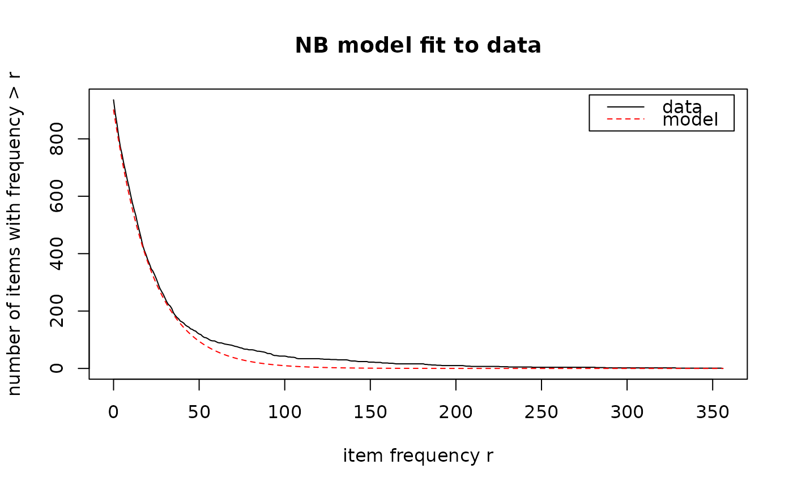

Estimate the global negative binomial data model used by NBMiner and create an appropriate parameter object.
Usage
NBMinerParameters(
data,
trim = 0.01,
pi = 0.99,
theta = 0.5,
minlen = 1,
maxlen = 5,
rules = FALSE,
plot = FALSE,
verbose = FALSE,
getdata = FALSE
)Arguments
- data
the data as an object of class arules::transactions.
- trim
fraction of incidences to trim off the tail of the frequency distribution of the data.
- pi
precision threshold \(\pi\).
- theta
pruning parameter \(\theta\).
- minlen
minimum number of items in found itemsets (default: 1).
- maxlen
maximum number of items in found itemsets (default: 5).
- rules
mine NB-precise rules instead of NB-frequent itemsets?
- plot
plot the model?
- verbose
use verbose output for the estimation procedure.
- getdata
also return the observed and estimated counts?
Value
An object of class NBMinerParameter for use with NBMiner(). If
getdata = TRUE, a list containing the parameter object, observed counts,
and expected counts is returned.
Details
The EM algorithm estimates the global NB model because the zero class (items that do not occur in the dataset) is not observed. The result is the two NB parameters \(k\) and \(a\). The value of \(a\) is rescaled by dividing it by the number of incidences in the data, as required by NBMiner. The estimated total number of items \(n\) is also returned.
The supplied values of theta and pi are added to the resulting
parameter object.
References
Michael Hahsler. A model-based frequency constraint for mining associations from transaction data. Data Mining and Knowledge Discovery,13(2):137-166, September 2006. doi:10.1007/s10618-005-0026-2
Examples
data("Epub")
param <- NBMinerParameters(Epub, trim = 0.05, plot = TRUE, verbose = TRUE)
#> 47 item(s) trimmed, leaving 889 items.
#> using Expectation Maximization for missing zero class
#> iteration = 1 , zero class = 37 , k = 1.126341 , m = 19.74298
#> iteration = 2 , zero class = 34 , k = 1.134154 , m = 19.80715
#> iteration = 3 , zero class = 34 , k = 1.134154 , m = 19.80715
#> total items = 923

param
#> pi theta n k a minlen maxlen rules
#> 0.99 0.5 923 1.134154 0.0008675844 1 5 FALSE